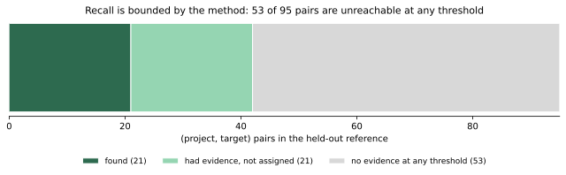
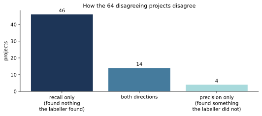
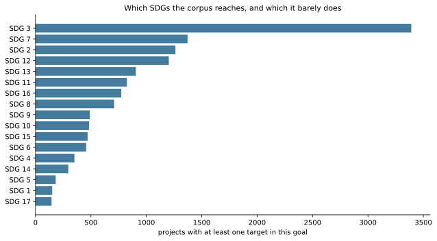
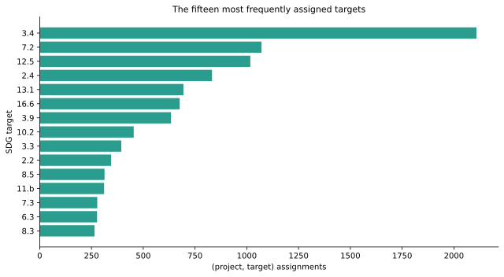
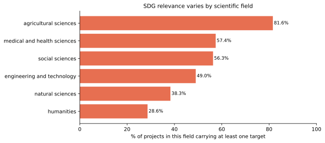
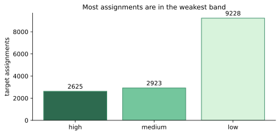

1. Recall Ceiling & Unreachable Reference Targets
Visualises the 0.442 recall ceiling: 53 of 95 reference pairs share zero terms with UN SDG targets, rendering them unreachable by lexical methods regardless of threshold tuning.
23,451 projects, each matched to SDG goals and targets by a fixed rule that gives the same answer every time, with the evidence behind every match one click away.
| Project ID | Acronym | Project Title | Level | Assigned SDGs | Confidence |
|---|---|---|---|---|---|
| Loading project search index (23,451 projects)... | |||||
Breakdown of 23,451 Horizon Europe projects mapped across the 17 Sustainable Development Goals. Click a goal to see its targets and how many projects each holds; from there, a click on a target lists those projects on the Home page.
Ground-truth validation results on the held-out 100 evaluation sample and development agreement metrics from the frozen pipeline run (output 0938fe34…, pipeline commit 0246412b, metrics artefact babd3741…).
assignment_level: none). Calibrated thresholding intentionally rejects low-confidence matches to preserve high precision (0.447) rather than forcing arbitrary labels.
Every reported metric is verified by self-proof inside scripts/metrics.py:
python scripts/metrics.py --results data/pipeline/evaluation-100-v2.json --results-sha256 0938fe34e41cd5d8ddccfba69238481fdf6470e54046104ad7a3535da6743709 --dev-results data/pipeline/development-50-v1.json --dev-results-sha256 032a4881774ce9adbbc84bb8a949b7d06843ad77a23aae1c4b77d6de522ea460 --handoff data/sample/handoff-evaluation-100.json --out data/pipeline/evaluation-100-metrics.json
The script validates development-50 agreement (0.677) and held-out 100 target metrics (P=0.447, R=0.221, Ceiling=0.442) against the frozen run output 0938fe34….
The six figures committed under figures/ are embedded directly without redrawing or modifications.

Visualises the 0.442 recall ceiling: 53 of 95 reference pairs share zero terms with UN SDG targets, rendering them unreachable by lexical methods regardless of threshold tuning.

Distribution and topology of classification agreements and disagreements between automated heuristic scoring and manual reference annotations.

Frequency of projects mapped to 0, 1, 2, or 3+ SDG goals. 30.6% (7,175) receive 0 assignments, while single-goal and dual-goal projects form the majority of assignments.

The top SDG targets linked across Horizon Europe funding, highlighting prominent concentrations in health (Goal 3), climate action (Goal 13), and energy transition (Goal 7).

Signal strength and scoring contribution across project Title, Objective, and Call Title fields, illustrating the critical importance of multi-field provenance.

How the assignments split across the three confidence bands, from high-certainty matches to exploratory ones.
Deterministic classification methodology, taxonomy integration, reproducibility commands, and cryptographic verification digests for the Horizon Europe CORDIS SDG mapping analysis.
The analysis operates on official European Union open datasets and established international taxonomies:
The system performs deterministic multi-label classification to assign UN SDGs to Horizon Europe research projects:
Methodological specifications, logic, and evaluation artifacts were formally frozen on 12 September 2026:
0246412b44f722567feaa2e6c1b6e695de86c923.
0938fe34e41cd5d8ddccfba69238481fdf6470e54046104ad7a3535da6743709.
The entire pipeline executes using only the Python standard library (version 3.10+) with zero external package dependencies. Run the reproduction suite in sequence:
python scripts/make_manifest.py python scripts/verify_licences.py python scripts/extract_targets.py python scripts/extract_key_terms.py python scripts/verify_crosswalk.py python scripts/draw_sample.py python scripts/build_handoff.py python scripts/build_handoff.py --set evaluation --out data/sample/handoff-evaluation-100.json python scripts/pipeline.py --handoff data/sample/handoff-150.json --set development --out data/pipeline/development-50-v2.json python scripts/pipeline.py --handoff data/sample/handoff-evaluation-100.json --set evaluation --freeze-seq 207 --out data/pipeline/evaluation-100-v2.json python scripts/explain.py --results data/pipeline/development-50-v2.json --out data/pipeline/development-50-explanations-v2.json python scripts/metrics.py --results data/pipeline/evaluation-100-v2.json --results-sha256 0938fe34e41cd5d8ddccfba69238481fdf6470e54046104ad7a3535da6743709 --dev-results data/pipeline/development-50-v1.json --dev-results-sha256 032a4881774ce9adbbc84bb8a949b7d06843ad77a23aae1c4b77d6de522ea460 --handoff data/sample/handoff-evaluation-100.json --out data/pipeline/evaluation-100-metrics.json python scripts/compare_control_table.py --control <path-to-control-table> python scripts/test_reported_figures.py
Cryptographic digests for all pipeline artefacts and specification documents, verified on disk:
| Artefact | Repository Path | SHA-256 / Commit Digest |
|---|---|---|
| Mapping Table | data/corpus/mapping-table-0246412.csv |
181d378a3078014193f3ae4f684b00b375ed62f3d24b2b34c060f6457b4a00d3 |
| Pipeline Commit | scripts/pipeline.py (frozen commit) |
0246412b44f722567feaa2e6c1b6e695de86c923 |
| Frozen Output | Evaluation run output | 0938fe34e41cd5d8ddccfba69238481fdf6470e54046104ad7a3535da6743709 |
| Specification | docs/cordis-sdg-registration-v10.md |
c5f2a26ce6049e801a7e757efc2cbe4253689987fad761f1d97cfb5b0ad68fb2 |
| Figures Document | data/corpus/figures.json |
03d79580081ca40bf0d1d25b5279a57880ddf09d750490553593387126d92f6f |
| Metrics Artefact | data/pipeline/evaluation-100-metrics.json |
babd37415581ce82ecb09c4501052ce811e834e57dad7c6735389ce321dd8a2e |
| Notebook Figures | figures/*.svg (6 embedded figures) |
Byte-identical SVG vector assets |